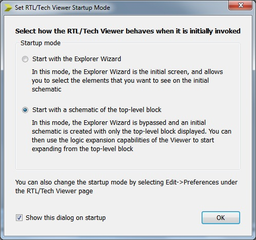
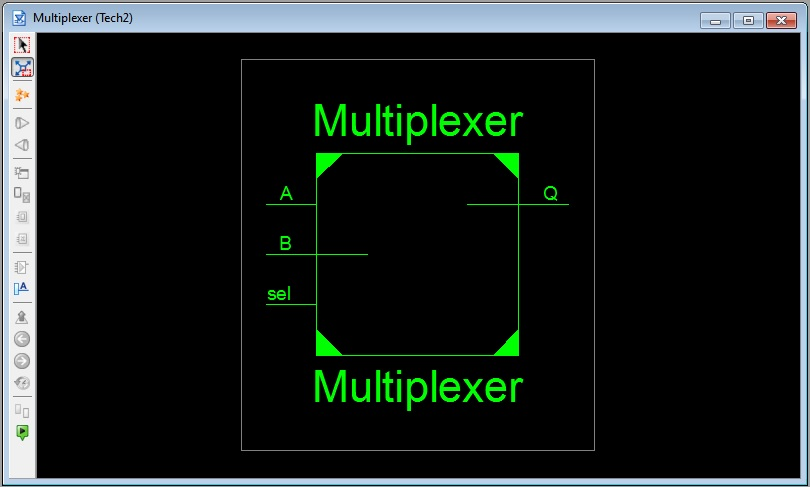
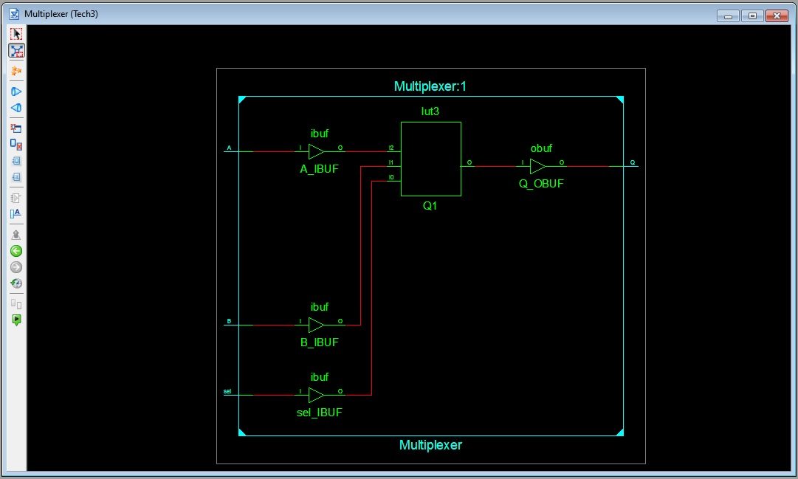
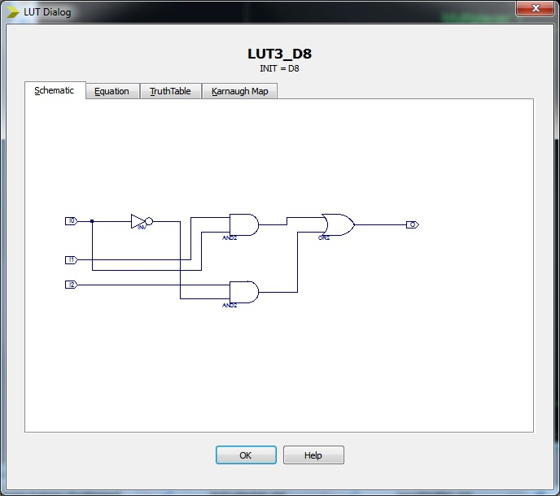
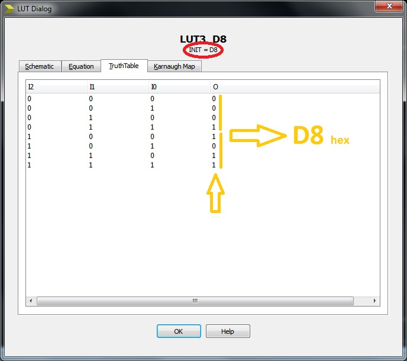

EEE6225 Systems Design
| Tutorial 1: Introduction to VHDL and Xilinx ISE |
| Synthesis |
When the VHDL file is correct, go to the Project Navigator and look in the Processes window and double click on the Synthesize-XST entry itself. Synthesis is the act of converting your HDL code first into a network of sequential and combinational logic elements which can be implemented on a FPGA by first mapping to the available programmable logic cell types followed by placing each logic element to utilise specific logic cell and finally routing the signals between the logic cells by configuring the programmable inteconnections needed to implement your chosen design. A green tick symbol indicates successful synthesis. If any warnings or errors are found (as indicated by or ), speak with a demonstrator to find out where the problem is. |
An alternative view is obtained by double clicking the View Technology Schematic. This view shows you how synthesis has mapped your design using in to the particular resorces available on the FPGA (i.e. FlipFlops, Look-Up Tables (LUTs), buffers, etc). This is a particularly useful tool for helping the designer understand where optimisations can be made on smaller design units. But first there is a question which you may not yet understand, so for now, simply choose the second option as shown in Figure 1. |
|  Figure 1. Schematic viewer mode selection |
A representation of the top level of your design is displayed in a window as shown in Figure 2. Double click on the symbols to descend down the hierarchy to see how the design is made up. For more complicated designs there will be an extensive heirarchy of blocks each in turn may contain several blocks of their own as the design hierarchy is decended. Eventually at the bottom levels a dialog showing the configuration of an FPGA logic cell will be displayed. |
| 


 Figure 2. Decending the design hierarchy in the schematic viewer |
The final view in Figure 2 shows a FPGA "LUT" (Look Up Table) which is the fundimental element used to compose all combinatorial logic and may be described as a Boolean equation, Karnaugh map, 'gate' schematic or Truth-table. The FPGA tool codes all these human readable respesentations with a single binary number of the output value given a bit-vector input of terms. For a LUT3 (three inputs) this is an 8-bit value. |
| Continue on to Defining constraints |